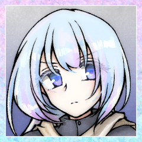
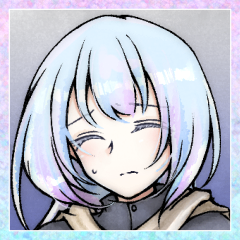
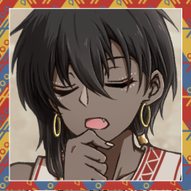
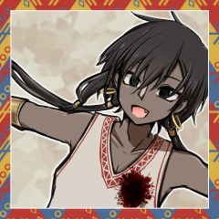
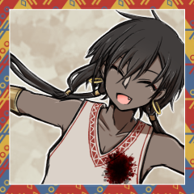
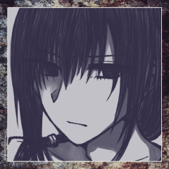
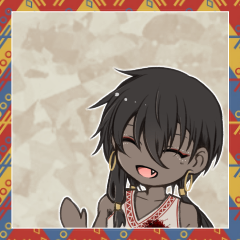
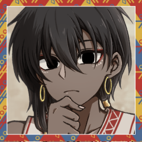
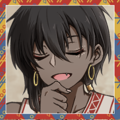

GM
Choice[猟奇,才覚,愛] (choice[猟奇,才覚,愛]) ＞ 愛
リラ
「愛型の救世主としてお呼ばれしました。よろしくお願いします」
リラ
「シールダーとか、ヒーラーとか、そういう感じに見てもらうのがいいかな？」
リラ
「１に防壁２に防壁３４に回復５に防壁みたいな気分です」
リラ
「防壁で壁役をやりつつ、回復をしていけると嬉しい、みたいな感じです」
リラ
「というわけで、2-4に置いてあります防壁。
これが愛型の要の技能です。
仲間を狙ったダメージを自分が肩代わりして軽減して受けます」
リラ
「とにかくこれが愛型の要で、2-4だけじゃなくて5-7にも置いていいレベルです」
リラ
「前2-4から8-10まで全部防壁とか見たことありますけど……」
リラ
「5-7は狂愛。回復を攻撃に転化するための技能です。
これによって愛型でもアタッカーをやることができるようになりました！」
リラ
「吸精も脅威度２から解禁される愛型向けの攻撃技能ですね。
攻撃と回復を同時に行えます。
ここに狂愛を組み合わせると２回連続で殴れるようになったりします」
リラ
「あ、押し込みっていうのは、ええと……このDoAってシステムはHP0になるたびに判決表というものを振りまして」
リラ
「その結果の良し悪しで立ち続けられるかどうかが決まるんですね」
リラ
「で、相手が倒れてくれるまで殴り続ける必要があるので……」
リラ
「そういう行動のことを押し込むと表現します」
リラ
「で、吸精の回復に狂愛を組み合わせると２回殴れるので、それが押し込み向きという表現になるんですね」
リラ
「回復は文字通りの回復ですね。
任意の対象を取ってから判定し、回復量を出してからそれを割り振る感じになります」
リラ
「で、臆病は装備技能。パッシブです。
自分が受けるダメージを１点軽減」
リラ
「私はこれに、防弾コートがあるので、基本的にダメージ２点軽減状態です」

リラ
「防壁も組み合わせれば５点軽減！ 倒れません」
リラ
「本編では防弾コートの一個上の鉄壁の衣装があったから７点軽減できてたんですよ！」
リラ
「ここに回復量アップする依存って装備技能を入れる人もいるみたいです。
私は回復よりも軽減を取ってるので臆病ですが……」
リラ
「依存だと吸精や回復による回復量、及び狂愛と組み合わせた時のダメージ量が増えるので」
リラ
「で、Aは救済！ 愛型は絶対Aに救済を入れると言っても過言ではありません」
リラ
「愛型に救済を使わせないために愛型以外はAに墓技能を入れる……まであるんじゃないでしょうか」
リラ
「えーと、墓技能というのは、その技能を使ったら切ったカードを墓に送らなければならない技能ですね」
リラ
「墓に送られたカードは二度と山札には戻りません」
リラ
「今回見えている終幕、百刑、救済は全部墓技能です」
リラ
「HPを〔【愛】D6〕点回復し、不調をすべて解除する」
リラ
「ので、私は3D6回復できます。
これは愛のステータスが２とかでも全然握って構わないやつですね」
リラ
「救済の何が一番強いかって、回復量もそうなんですが、判定が要らないことです！」
リラ
「問答無用で3D6+1点ダメージ、ワクワクしますからね」

リラ
「……まあ、とか言ってるとAが引けなかったり……」
リラ
「不調の封印によって絵札技能が使えなくなっていたり……」
リラ
「狂愛なしでも愛型は全然強いので、狂愛にとらわれずシートを考えてくださいね」
リラ
「私は結局持ち込んだはずの狂愛を捨てる結果になりましたし……」
リラ
「えーと、宝物……装備とアイテムの話をさらりと。
凶器は呪物で、威力は２点、特殊効果は回復量＋１」
リラ
「で、衣装は防弾コート！
このシステム、基本的にはどんなに軽減してもダメージを０点以下にできないんですが、防弾コートを着ているキャラクターだけは話が別です」
リラ
「防壁と臆病と防弾コートを組み合わせてダメージを０に近づけていくのがこのビルドの理想です」
リラ
「えーと……だいたいこんな感じでしょうか？」
リラ
「臆病で防御を偏重しつつ、狂愛と吸精で殴っていくぞ、というタイプの愛型、という感じで」
リラ
「覚えていただけますと幸いです。
防壁と回復と救済はない愛型の方が珍しいので……」
GM
Choice[猟奇,才覚] (choice[猟奇,才覚]) ＞ 才覚
ヨロトル
「才覚型救世主になりまーす。
猟奇が一番シンプルなのに最後になっちまったなあ」
ヨロトル
「才覚型、まあある意味一番DoAを象徴するっつーか……」
ヨロトル
「猟奇はアタッカー、愛は壁役ヒーラーで済むけど、妨害って言われてもピンと来ねえよな普通」
ヨロトル
「ま、その妨害が才覚の仕事。
8-10とJに置いてあります妨害をご覧いただけますと幸い」
ヨロトル
「＞誰かの判定前に割り込み。【才覚】で判定し、成功すれば、その達成値を判定の目標値として扱う」
ヨロトル
「基本このDoAってシステムでの目標値は7で」
ヨロトル
「そこに猟奇だの才覚だの愛だのの求められてるステータスの数値をプラスして2D6を振るんだけど」
ヨロトル
「まあ、普通に組んだら得意分野のステータス3はあるわけだから」
ヨロトル
「4以上出れば成功っつーことが多いワケだ」
ヨロトル
「で、それを邪魔するのがこの妨害って技能」
ヨロトル
「判定に割り込んで、妨害の判定振って、その達成値が相手の目標値になる」
ヨロトル
「面倒だから実演するか。そこの姫さんの回復に妨害入りまーす」
ヨロトル
2d6+3+1+1=>7 判定（＋才覚）万能と多彩な凶器で+1+1 (2D6+3+1+1>=7) ＞ 9[5,4]+3+1+1 ＞ 14 ＞ 成功
リラ
2D6+3>=14 （＋愛） (2D6+3>=14) ＞ 10[6,4]+3 ＞ 13 ＞ 失敗
ヨロトル
「愛型がダメージ軽減とか回復量アップとかを構えてる一方」
ヨロトル
「才覚型は達成値を上げるための工夫をする」
ヨロトル
「俺の場合はQの万能と、あとこの多彩な凶器ってやつだな。凶器の」
ヨロトル
「これで+1+1が入るから、姫さんより出目が1低くても勝ちだったってワケ」
ヨロトル
「とは言え+2だけで渡り合うのはキツいのでー……」
ヨロトル
「妨害、達成値で抜かれたらマジで”無”の行動だからな」
ヨロトル
「高い出目を求められるのが才覚型なので、PLの胃が痛くなるとされます」
ヨロトル
「+2だけで渡り合うのはキツいので、ここで2-4の精確の出番」
ヨロトル
「割り込み技能だな。自分の妨害の判定に割り込んでこれを使う」
ヨロトル
「まあぶっちゃけ才覚は2-4に精確、5-7に主動作、8-10妨害がセオリーだわ」
ヨロトル
「要するに精確を組み合わせると事実上の3D6で判定できるってことになる」
ヨロトル
「3D6+3+1+1と2D6+3のバトルならまあそれなりに仕事はできるかって感じ？」
ヨロトル
「そういうこと言ってると精確がなかったり妨害がなかったりするんだけどな！」
ヨロトル
「いやあ妨害、8-10以上にしか置けねえからさあ」
ヨロトル
「来ない時はマジで来ないんだよな。参ったね」
ヨロトル
「押し込み向きだな。姫さんが説明してくれたので割愛」
ヨロトル
「俺の威力は3だからいまいち打点は出ないけど、終盤の局面に強いという感じになる」

ヨロトル
「まあでもこれ、姫さんみてえな愛型にはマジできついんだよな～」
ヨロトル
「１点ダメージと３点ダメージだぜ。全然通んねえ」
ヨロトル
「そこをフォローするための手段はないわけじゃねえが、そこは実際の裁判で見ていこう」
ヨロトル
「Q万能は裁判中の判定の達成値１上昇。
才覚以外も増える。これの何がいいかっていうと判決表内チョイスだな」
ヨロトル
「＞6～8 ランダムな能力値で判定し、成功すればHPを1点回復して立ち上がる。失敗すれば〈昏倒〉する。」
ヨロトル
「これこれ。これにも乗る。これ、自分が持ってないやつ引くとキツいからさ」
ヨロトル
「そこに+1入るのはまあまあお守りになるかな、って感じ」
ヨロトル
「才覚が構える装備技能としては、自分の手札を捨てて才覚判定の達成値を上げる器用ってのもあるが……」
ヨロトル
「俺はやること多いから万能の方にした。器用も全然強いぜ」
ヨロトル
「で、K間隙は相手の失敗に割り込んでダメージを与えるやつだな。
自分が妨害した結果の失敗だとダメージがさらにあがる。
これも押し込み意識」
ヨロトル
「百刑は自分の与えたダメージに割り込んでさらにダメージを与え、任意の不調を与えられる」
ヨロトル
「押し込み向きでもあるけどAって特性上わりと序盤にしか回ってこねえから不調メインかな～」
ヨロトル
「俺も半分くらいAを墓に送りたくて構えてるとこあるしな。救済はマジで困る」
ヨロトル
「というわけで才覚型としてはこんな感じ」
ヨロトル
「まあまあスタンダードだと思うぜ。やや攻撃的なくらいか？」
ヨロトル
「才覚型の仕事は妨害とサブアタッカーで、俺は特に手数に特化した形になってる」
ヨロトル
「不調ばら撒きを重視するやつもいるのでそこはお好みでどうぞ。
霞斬のとこに暗器とか必衰入れたりとか、Kに奪取入れて相手のカード奪ったりとか、そういうのもあるな」
ヨロトル
「才覚型、妨害が通ると最高に気持ちいいからそこはおすすめ」
ヨロトル
「妨害が引けなかったり通らないと心が死ぬけど」
ヨロトル
「あと妨害ってほとんどの判定に割り込める技能だから」
ヨロトル
「どこに切るかの判断が常に求められるやつもである。まさに才覚だな」

ヨロトル
「プレミを引きずらないメンタルセットが一番大事ってことだ！」

ヨロトル
「シクっても切り替えてこうな！」

イーデン
「猟奇型救世主。イーデン・クロフツ」
イーデン
「……猟奇の仕事はメインアタッカーになる」
イーデン
「高い打点を出し、敵を可及的速やかにHP0に追い込む。自分以外にも判決表を振らせられる状態に至らせる」
イーデン
「PvPに特化している。或いは仲間に才覚型がおらず、敵からの妨害を警戒している」
イーデン
「……2-4精確。これを猟奇型が構えるのは少し珍しい」
イーデン
「猟奇型はとにかく主動作が欲しいからな」
イーデン
「この低脅威度で数字枠に主動作が１枠しかない、というのは、それなりの強気ではある」
イーデン
「まあ、そうしてでも敵の妨害を警戒したわけだが。
3D6+3+1+1vs2D6+3はキツい」
イーデン
「が、警戒した妨害が敵に存在しない場合もある。
PKの構成はセッションが始まるまでわからないからな」
イーデン
「空振りだった場合、妨害が入らない場合に備えて採用されたのが8-10闇雲だ」
イーデン
「＞最大4点までマイナス修正をつけて【猟奇】で判定する。成功すれば〔威力＋つけたマイナス修正〕点のダメージを与える。」
イーデン
「精確闇雲という組み合わせで、精確による判定値へのプラス修正を打点に転化することが可能になる」
イーデン
「ここに鋭気を組み合わせれば最大1D6+2(上質な凶器)+3(鋭気)+4(闇雲-4)の基本ダメージが期待できる」
イーデン
「妨害を警戒する猟奇型の定番コンボではあるな。脅威度が上がれば威風１枠で済むんだが……」
イーデン
「猟奇型はとにかく数字枠の主動作の選択肢が多い」
イーデン
「凶刃、闇雲、牽制、通打、どれを構えるかは仲間と敵を見て決めることだ」
イーデン
「J刹那。低脅威度の猟奇が高確率で構えることになる」
イーデン
「＞自身が〈発狂〉していない時に使用できる。【猟奇】で判定し、成功すれば〔威力〕点のダメージを与える。この効果には自身を含め誰も割り込みできない。」
イーデン
「あらゆる割り込み技能を無視した攻撃が可能になる主動作技能だ」
イーデン
「わかりやすく強いが、流石に制作者もそれを理解しているのか大きな枷が噛まされている」
イーデン
「＞自身が〈発狂〉していない時に使用できる。」
イーデン
「ここだな。心の疵が両方●状態だとこの技能は使えない」
イーデン
「ココフォリアの画面で言えば-1状態だが」
イーデン
「これを２枠構えてもいいと言ったが、これも２枠構えたばかりに敵の手番を全て使って発狂させられた救世主もいると聞く」
イーデン
というかそいつがここに来てくれたら俺もこんなことしなくていいんだが。
イーデン
「……わかりやすく強い技能ではあるが、デメリットには留意するように」
イーデン
「Q報復。殴り返すための技能。押し込みに役立つ」
イーデン
「仲間が防壁を２枚構えていたりすると少々使いづらくはなるが……」
イーデン
「攻撃機会を増やす重要性が非常に大きいシステムだ」
イーデン
「K遊撃。猟奇型が採用しない理由のない問題児」
イーデン
「妨害と同レベルでありとあらゆる判定に割り込めるが、ダメージを伴うため扱いが面倒くさい」
イーデン
「遊撃に対して防壁を切られることは多いからな」
イーデン
「鋭気切ってから闇雲を切ってダメージを算出したところに防壁が入ってそこに遊撃入れると鋭気のダメージが遊撃に移動するらしいぞ」
イーデン
「……まあ、そのあたりの処理はGMに任せるところだ」
イーデン
「相手の判定失敗を狙え、押し込みにも役立つ」
イーデン
「猟奇型はとりあえずKに遊撃を入れて損はないが」
イーデン
「妨害と同じくらい介入タイミングの多い技能だ」
イーデン
「Aは終幕。低脅威度においては救済に負けず劣らず強い」
イーデン
「相手の判決表に-2の補正が入る。これは脅威度の低いタイミングでは非常に大きい」
イーデン
「そもそも低脅威度帯においては判決表一発で昏倒することが珍しくはない」
イーデン
「一刻も早く相手のHPを0に押し込める猟奇型が有利な環境になる」
イーデン
「これが脅威度3以上になってくると才覚愛ペアが相当手強くなってくるんだが……」
イーデン
「……今回はバトルロイヤルだからなんとも言えんな」
イーデン
「凶器は上質な凶器。1D6+2。特殊効果無し」
イーデン
「威力が高いだけの凶器だが、猟奇型にはそれが一番重要になる」
イーデン
「人によっては金を払って鋭利な凶器で2D6を振りたがるが……」
イーデン
「金を払って博打をする趣味は俺にねえな」
イーデン
「デッキの再確認。
概ね精確鋭気闇雲のコンボを基本にした基本型。
妨害に対する警戒が全面に出たスタンダードな猟奇型シート」
イーデン
「仲間がおり、数字１枠の主動作を引き続ける自信がない場合は鋭気を外して主動作を増やしてもいいだろう」
イーデン
「或いは報復を他の主動作技能に変えてもいい。
参考サンプルとして貼られた俺のシートは報復が破壊だったはずだ」
イーデン
「とにかく主動作を握って相手を殴るのが猟奇型の仕事だ」
イーデン
「引きに自信がないなら慎重になってもいいだろう。低脅威度帯で仲間がいるなら尚更な」

ヨロトル
あの人仲間いない状態で数字１枠の主動作引けないまま3R消費したらしいもんな……
GM
＊というわけで、裁判チュートリアルをさらっとやっていきます。
GM
＊その前に簡易お茶会をやります。
めんどくさいのでダイスの出目が高い順に任意の心の疵を一つずつ抉りましょう。
リラ
「一番迷うの私だと思うんですけどこの状況……」
リラ
「えーと、でも、イーデンさんの猜疑……を抉ります。
ヨロトルさんとは長期戦できますし、
イーデンさんの方が逆転リソースを削りたいので……」
イーデン
「リラのあこがれ。
愛型に看破を付けない理由がない」
ヨロトル
「はい。リラのうたごえ抉りまーす。
愛型には看破をつけないといけないし発狂してもらわんと話にならん」
[ イーデン ] 猜疑 : 0 → -1
[ リラ ] あこがれ : 0 → -1
[ リラ ] うたごえ : 0 → -1
GM
＊心の疵の状態が両方悪化したため、裁判開始前にリラは〈発狂〉します。
GM
＊心の疵が抉れきった状態です。すべての心の疵が状態●になった際に陥り、エピローグまで解除できません。〈発狂〉しているキャラクターは、受けるダメージが1点増加します。
GM
＊看破（デメリット／自動発生）
状態●の心の疵の関係欄に名前があるキャラクターからは、強制的に受けるダメージが2点増加します。
看破が適用される回数は、関係欄のキャラクター1人につき1ラウンドに1回だけです。
GM
＊イーデン＞リラ、ヨロトル＞リラ、リラ＞イーデンで看破がつきます。
1Rに一回まで。
GM
1. 陣営の確認
2つ以上の陣営に分かれて戦います。裁判に参加するキャラクター、および陣営を確認しましょう。
GM
＊バトルロイヤルなので1vs1vs1ですね。
GM
2-3は今回既に済んでるので省いていいとして
GM
＊仕込とかあったらここなんですが、今回はないですね。
GM
裁判の参加者は〔1D6＋【才覚】〕で「先制値」を決定します。先制値の高いキャラクターから順に行動順が割り振られます。
先制値が同じキャラクターがいる場合、そのキャラクター同士で再び先制値決定を行い、高いほうが先の行動順となります。全員の行動順が一意に定まるまで、この操作を繰り返してください。
[ イーデン ] 日刻みの時計 : 1 → 0
[ ヨロトル ] 日刻みの時計 : 1 → 0
GM
＊日刻みの時計の効果により、イーデンとヨロトルの先制値が+2されます。
イーデン
1d6+1+2 才覚1 日刻みの時計 (1D6+1+2) ＞ 6[6]+1+2 ＞ 9
ヨロトル
1d6+3+2 才覚3 日刻みの時計 (1D6+3+2) ＞ 6[6]+3+2 ＞ 11
GM
＊行動順は１回決めたら毎ラウンド固定です。
なのでここにかかってくるわけですね。
ヨロトル
「これ俺が一番困るんだよな 一番悩まない？ マジで悩むな……」
ヨロトル
「どう考えてもリラをどうにかしたいんだけど……」

ヨロトル
「とにかく俺はリラとの1対1になるのが詰みなんだよ」
ヨロトル
「看破と発狂ついたと言っても流石に霞斬と妨害であの要塞愛型と渡り合えるとは思えん」
ヨロトル
「ので、まあ、イーデンの兄ちゃんに削ってもらわざるを得ないことを考えると」
ヨロトル
「まー……あんま意味ないと分かっててもこうか？」
ヨロトル
＊霞一段目の判定にs3精確で割り込みます
ヨロトル
2d6+3+1+5-2=>7 判定（＋才覚）多彩な凶器 万能 精確 霞-2 (2D6+3+1+5-2>=7) ＞ 7[4,3]+3+1+5-2 ＞ 14 ＞ 成功
ヨロトル
＊成功。ダメージは1点に看破2点と発狂1点。
ヨロトル
c(1+2+1) c(1+2+1) ＞ 4
リラ
＊防壁はないですが、防弾コートと臆病で2点軽減して2点受けます！
[ リラ ] HP : 22 → 20
ヨロトル
2d6+3+1+1=>7 判定（＋才覚） (2D6+3+1+1>=7) ＞ 7[4,3]+3+1+1 ＞ 12 ＞ 成功
ヨロトル
c(3+1) 威力3+発狂1 c(3+1) ＞ 4
[ リラ ] HP : 20 → 18
イーデン
見込みダメージが2D6+2+3でリラには+2か。
イーデン
どちらにせよ判決表には持っていけそうにないな。
イーデン
リラは間違いなくこちらを狙ってくるが……
イーデン
考えるのが面倒になった。速攻で殺しに行こう。
イーデン
2d6+3+4=>7 判定（＋猟奇） (2D6+3+4>=7) ＞ 8[3,5]+3+4 ＞ 15 ＞ 成功
イーデン
2D6+2+3+2+1 上質な凶器1d6+2 終幕で+1D6 鋭気で+3 看破で+2 発狂で+1 (2D6+2+3+2+1) ＞ 4[1,3]+2+3+2+1 ＞ 12
[ リラ ] HP : 18 → 8
リラ
3D6+1 (3D6+1) ＞ 9[6,1,2]+1 ＞ 10
[ イーデン ] HP : 18 → 8
ヨロトル
＊流石に死なれると困りまーす！ 回復の判定にhJ妨害！
ヨロトル
2d6+3+1+1+1=>7 判定（＋才覚）多彩な凶器 万能 精確 (2D6+3+1+1+1>=7) ＞ 9[5,4]+3+1+1+1 ＞ 15 ＞ 成功
イーデン
＊ヨロトルの出目がいい。遊撃は入れない。
リラ
＊割り込みがいっぱいあるので、自分の判定の前に割り込みが入らないかの確認が大事なんですね……
リラ
2D6+3>=15 (2D6+3>=15) ＞ 11[6,5]+3 ＞ 14 ＞ 失敗
[ GM ] ラウンド : 1 → 2
イーデン
ほどほどであいつを殴って殺しておきたい気もするんだが。
イーデン
ダメージが1D6+2+3+2+1-2か……
イーデン
2d6+3-1=>7 判定（＋猟奇） (2D6+3-1>=7) ＞ 7[5,2]+3-1 ＞ 9 ＞ 成功
イーデン
1D6+2+3+2+1+1 上質な凶器、鋭気、看破、発狂、闇雲-1 (1D6+2+3+2+1+1) ＞ 1[1]+2+3+2+1+1 ＞ 10
リラ
＊臆病と防弾コートで-2つけても判決表です……
[ リラ ] HP : 8 → 0
リラ
2D6+2 脅威度2 (2D6+2) ＞ 9[3,6]+2 ＞ 11
[ リラ ] HP : 0 → 1
[ リラ ] 前科 : 0 → 1
ヨロトル
＊妨害にs4精確で割り込んで、振りまーす。
ヨロトル
2d6+3+1+1=>7 判定（＋才覚） (2D6+3+1+1>=7) ＞ 5[2,3]+3+1+1 ＞ 10 ＞ 成功
イーデン
2d6+3=>7 判定（＋猟奇） (2D6+3>=7) ＞ 11[6,5]+3 ＞ 14 ＞ 成功
イーデン
1d6 遊撃の達成値マイナス効果量 (1D6) ＞ 1
イーデン
なんともならんな。ダメージは受けてもらう。
イーデン
c(3+1) 遊撃のダメージ 猟奇3と発狂1 c(3+1) ＞ 4
[ リラ ] HP : 1 → 0
リラ
2D6+2-1 脅威度2 前科1 (2D6+2-1) ＞ 7[2,5]+2-1 ＞ 8
リラ
6～8 ランダムな能力値で判定し、成功すればHPを1点回復して立ち上がる。失敗すれば〈昏倒〉する。
リラ
Choice[猟奇,才覚,愛]
(choice[猟奇,才覚,愛]) ＞ 愛
リラ
2d6+3=>7 判定（＋愛） (2D6+3>=7) ＞ 5[4,1]+3 ＞ 8 ＞ 成功
[ リラ ] HP : 0 → 1
[ リラ ] 前科 : 1 → 2
リラ
2d6+3-1=>10 判定（＋愛） (2D6+3-1>=10) ＞ 12[6,6]+3-1 ＞ 14 ＞ 成功
リラ
＊見てくれていますか優くん！！！！！！！！！！！！！！
GM
＊PCが裁判中の判定でスペシャルを起こした場合、即座にPCのHPを1D6点回復します。
[ リラ ] HP : 1 → 2
リラ
1D6+3+1 そしてこれが回復量！ (1D6+3+1) ＞ 5[5]+3+1 ＞ 9
[ イーデン ] HP : 8 → 0
イーデン
2d6+2-0 判決表 (2D6+2-0) ＞ 8[3,5]+2-0 ＞ 10
イーデン
9～11 HPを1点回復して立ち上がる。
[ イーデン ] HP : 0 → 1
[ イーデン ] 前科 : 0 → 1
リラ
＊そういえばイーデンさんに看破つくの忘れてたんでHP2点こっちに戻していいですか？ 戻しますね。
リラ
＊看破つくので狂愛によるダメージがさらに2点上昇するはずなので、6点の割り振りで十分でした。
リラ
＊ので！ 6点割り振りの自分には3点にしますので、あと2点回復です！
[ リラ ] HP : 2 → 4
[ GM ] ラウンド : 2 → 3
ヨロトル
いやまあここでイーデンの兄ちゃんが俺を狙うのはややわかる。
ヨロトル
HP1に持ち込まれたら霞斬が鬱陶しいからな。
ヨロトル
そんで俺は結局そこの兄ちゃんに姫さんを倒してもらわなきゃならない立場だから……
ヨロトル
いや、今HP1とかで防壁なかったらまだしもな……
イーデン
2d6+3=>7 判定（＋猟奇） (2D6+3>=7) ＞ 7[2,5]+3 ＞ 10 ＞ 成功
イーデン
1D6+2+3 上質な凶器と鋭気のみ。 (1D6+2+3) ＞ 2[2]+2+3 ＞ 7
[ ヨロトル ] HP : 16 → 9
ヨロトル
冷静に考えたら妨害２枚あるし１回くらい切っといてよかったかもしれん。
ヨロトル
＊困るんだよな～ッ 妨害c10で割り込み！
ヨロトル
2d6+3+1+1+1=>7 判定（＋才覚）多彩な凶器 万能 精確 (2D6+3+1+1+1>=7) ＞ 8[6,2]+3+1+1+1 ＞ 14 ＞ 成功
イーデン
2d6+3=>7 判定（＋猟奇）遊撃の判定 (2D6+3>=7) ＞ 5[3,2]+3 ＞ 8 ＞ 成功
イーデン
1d6 達成値マイナス効果量 (1D6) ＞ 2
イーデン
c(3+2+1) ダメージは猟奇点+看破+発狂 c(3+2+1) ＞ 6
ヨロトル
＊頭があったかくなって参りました。h2防壁にdJ妨害です。
ヨロトル
2d6+3+1+1=>7 判定（＋才覚）多彩な凶器 万能 (2D6+3+1+1>=7) ＞ 10[4,6]+3+1+1 ＞ 15 ＞ 成功
リラ
2d6+3=>15 判定（＋愛） (2D6+3>=15) ＞ 9[5,4]+3 ＞ 12 ＞ 失敗
ヨロトル
c(3+3+2+1) 才覚3点 威力3点 看破2点 発狂1点 c(3+3+2+1) ＞ 9
リラ
防壁で5点軽減しても間に合わないんですけど！？
ヨロトル
さらにここからツリーが伸びなかったことを喜ぼうぜ。
リラ
＊一応……臆病と防弾コートで2点減らして7点受けます……
[ リラ ] HP : 4 → 0
リラ
2D6+2-2 脅威度2 前科2 (2D6+2-2) ＞ 12[6,6]+2-2 ＞ 12
リラ
12～ 無罪！HPが0となる際に受けた不利な効果を無効とし、HPは0になる前の値に戻す。前科は増える。
イーデン
＊が、防壁が失敗したので遊撃のダメージ6点は受けてもらう。
リラ
＊なんか処理がめちゃくちゃになってるのでここでさらに防壁切っていいような気分が湧いてくるんですけど……
[ リラ ] HP : 0 → -4
[ リラ ] HP : -4 → 0
[ リラ ] HP : 0 → 4
[ リラ ] 前科 : 2 → 3
リラ
それで遊撃のダメージ6点を2点軽減して4点受けまして……
[ リラ ] HP : 4 → 0
リラ
2D6+2-3 脅威度2 前科3 (2D6+2-3) ＞ 2[1,1]+2-3 ＞ 1
リラ
＊えっと、昏倒したり死亡したりしたキャラクターの手札はその時点で捨て札になります……
リラ
＊こういう空間ですから！ こういう空間ですからねっ！
ヨロトル
＊つける必要あるかその発言？ まあ進めていこうか。
ヨロトル
いやーイーデンの兄ちゃんが俺殴ったの正しすぎて泣けんね。
[ GM ] ラウンド : 3 → 4
ヨロトル
2d6+3+1+1=>7 判定（＋才覚） (2D6+3+1+1>=7) ＞ 7[3,4]+3+1+1 ＞ 12 ＞ 成功
イーデン
2d6+3+3=>12 判定（＋猟奇） (2D6+3+3>=12) ＞ 8[4,4]+3+3 ＞ 14 ＞ 成功
ヨロトル
妨害に逆転入れて達成値高くすればよかった。参ったね。
ヨロトル
PCのみ、自身の判定後か、自身の与えるダメージ算出後に宣言できます。
状態●ではない心の疵を1つ選んで悪化させることで、振ったダイスのうち1つを1～6の好きな値に変更できます。
ヨロトル
妨害って相手に振られてからだとどうしようもないから参るね～。
イーデン
1D6+2+3 (1D6+2+3) ＞ 1[1]+2+3 ＞ 6
[ ヨロトル ] HP : 9 → 3
ヨロトル
＊悩ましいけどsA捨てるか！
霞斬が今一番欲しい！
[ GM ] ラウンド : 4 → 5
ヨロトル
＊結果論だけどsAキープしててもよかったな。
ヨロトル
2d6+3-2+1+1+2=>7 判定（＋才覚）霞2段目 多彩な凶器 万能 精確 (2D6+3-2+1+1+2>=7) ＞ 5[4,1]+3-2+1+1+2 ＞ 10 ＞ 成功
[ イーデン ] HP : 1 → 0
イーデン
2d6+2-1 判決表 (2D6+2-1) ＞ 11[6,5]+2-1 ＞ 12
イーデン
12～ 無罪！HPが0となる際に受けた不利な効果を無効とし、HPは0になる前の値に戻す。前科は増える。
[ イーデン ] HP : 0 → 1
[ イーデン ] 前科 : 1 → 2
GM
＊こうなると同タイミングなので、ダイス勝負です。
イーデン
2d6 (2D6) ＞ 8[2,6] ＞ 8
ヨロトル
2d6 (2D6) ＞ 11[6,5] ＞ 11
ヨロトル
＊いや別ツリーだから流石に今回はなしにするか……
ヨロトル
*d4百刑で3点を受けてもらおう。不調は封印を指定。
[ イーデン ] HP : 1 → 0
イーデン
2d6+2-2 判決表 (2D6+2-2) ＞ 8[5,3]+2-2 ＞ 8
イーデン
6～8 ランダムな能力値で判定し、成功すればHPを1点回復して立ち上がる。失敗すれば〈昏倒〉する。
イーデン
Choice[猟奇,才覚,愛] (choice[猟奇,才覚,愛]) ＞ 猟奇
イーデン
2d6+3=>7 判定（＋猟奇） (2D6+3>=7) ＞ 11[6,5]+3 ＞ 14 ＞ 成功
[ イーデン ] HP : 0 → 1
[ イーデン ] 前科 : 2 → 3
ヨロトル
＊封印はここで通るけど発動自体は同タイミングだからまあ報復は通っていいか……
ヨロトル
＊どうなんだろうな……この場合……ほんとに……
[ イーデン ] 封印@5Rヨロトル : 0 → 3
ヨロトル
＊封印されるとJ以上の手札が使えなくなって全て2-4扱いになる。
装備技能の札は2-4としても使えなくなるけどな！
ヨロトル
＊ので、終幕を殺せるってわけだ。助かる～。
イーデン
＊百刑の処理が終わったので報復の判定をする。
イーデン
2d6+3=>7 判定（＋猟奇） (2D6+3>=7) ＞ 10[5,5]+3 ＞ 13 ＞ 成功
イーデン
1D6+2+2 ダメージ (1D6+2+2) ＞ 2[2]+2+2 ＞ 6
イーデン
1D6+2のはずだ。どちらにせよ4点で判決だが。
[ ヨロトル ] HP : 3 → 0
ヨロトル
2d6+2 (2D6+2) ＞ 6[1,5]+2 ＞ 8
ヨロトル
6～8 ランダムな能力値で判定し、成功すればHPを1点回復して立ち上がる。失敗すれば〈昏倒〉する。
ヨロトル
Choice[猟奇,才覚,愛] (choice[猟奇,才覚,愛]) ＞ 猟奇
ヨロトル
2d6+1+1=>7 判定（＋猟奇＋万能） (2D6+1+1>=7) ＞ 3[2,1]+1+1 ＞ 5 ＞ 失敗
ヨロトル
ここから霞2段目があるし勝てる筈だったんだが。
ヨロトル
＊博愛を抉ってダイス目の1を6に変更し、達成値は9！
[ ヨロトル ] 博愛 : 0 → -1
[ ヨロトル ] HP : 0 → 1
[ ヨロトル ] 前科 : 1 → 0
[ ヨロトル ] 前科 : 0 → 1
ヨロトル
2d6+3+1+1+2=>7 判定（＋才覚） (2D6+3+1+1+2>=7) ＞ 6[5,1]+3+1+1+2 ＞ 13 ＞ 成功
[ イーデン ] HP : 1 → 0
イーデン
2d6+2-3 判決表 (2D6+2-3) ＞ 3[1,2]+2-3 ＞ 2
イーデン
～2 ランダムな能力値で判定し、成功すれば〈昏倒〉する。失敗すれば〈死亡〉する。
イーデン
Choice[猟奇,才覚,愛] (choice[猟奇,才覚,愛]) ＞ 猟奇
イーデン
2d6+3=>7 判定（＋猟奇） (2D6+3>=7) ＞ 5[3,2]+3 ＞ 8 ＞ 成功
ヨロトル
あんたそれができるんならあんなことになってねえのよ。
ヨロトル
やっぱり霞斬はPvP環境に於いて最強ということがわかる。
イーデン
もうちょっとヨロトル狙ってもよかったかもしれんな。
イーデン
防壁を引けていない愛型を前に殴らないのは難しい。
リラ
おわかりいただけましたでしょうか？ 愛型でもっとも大事なのが防壁であることが……
リラ
私が防壁引けなかった割にヨロトルさんは妨害バンバン引くし通すし。
リラ
愛型は精確入れてる隙間がほとんどないので……
リラ
でも妨害もっと引けないと思うじゃないですか？ 普通……
リラ
引かれて、通され続けると、こうなるんですね。
ヨロトル
援護（メリット／要宣言）
状態○の心の疵の関係欄に名前があるキャラクターから、次の効果のうち1つだけ選んで援護してもらうことができます。
援護は1ラウンドに1回だけ、割り込み技能と同じ扱いで宣言することができます。
ヨロトル
技能強化
技能の判定前に割り込み、その判定の達成値と、その技能で次に与えるダメージ及び与える回復量をそれぞれ2点増加します。この効果は判定に失敗すると消滅します。
ヨロトル
ダメージ軽減
ダメージ適用前に割り込み、受けるダメージを2点軽減します。
ヨロトル
これで＋２することで妨害を突破したりしなかったりする。
ヨロトル
あとはまあ、仲間に才覚型がいるなら妨害に対する対抗妨害だな。
ヨロトル
そこの姫さんは相方が才覚型だったしな。そのつもりで来てるシートだ。
ヨロトル
逆にイーデンの兄ちゃんは当時は才覚型不在のPTだったから精確鋭気闇雲なんてデッキを構えてたってワケ。
ヨロトル
喋る必要ないなら喋りたくない人？ だよな。
ヨロトル
「このDead or AliCeってシステムは」
ヨロトル
「猟奇、才覚、愛の３人が揃うことでバランスのいいPTが組めるんだけど」
ヨロトル
「だからこそ２人PTの場合はどうしても生まれる欠けを埋め合う構成を考える必要が出てくる」
ヨロトル
「自分の役割にひたすら徹すればいい3人PTよりは、2人PTの方が実は奥深いとこあると思ってるぜ」

ヨロトル
「まあPLは初めての2on2裁判で4人全員が遊撃構えてて発狂したんだけど……」
ヨロトル
「ありとあらゆる割り込みチャンスがありすぎるんだよな、全員遊撃持ってると」
ヨロトル
「いい技能だよな！ 遊撃！ 俺も脅威度５とかになったら絶対取った！」
ヨロトル
「えーと、じゃあ戦後処理の話をちょっとするか」
ヨロトル
「まあ大したものはなくて、発狂してて生きてる人がいたら亡者化判定があるくらいなんだけど……」
ヨロトル
「ので、亡者化判定について貼るだけ貼っとくか」
ヨロトル
エピローグ
キャラクターがどのような結末を迎えたかを描くステージです。
疵の状態や裁判の結果を踏まえ、事件の結末を演出してください。その後、下記のセッション終了処理に移ります。
ヨロトル
1. 亡者化の確認
この時点で〈発狂〉しているキャラクターは亡者化（＝ロスト）の可能性があります。
〈発狂〉しているキャラクターは【猟奇】【才覚】【愛】の能力値からランダムに1つ選び、判定してください。
判定に失敗すると、そのキャラクターは亡者化（＝ロスト）します。以降のセッションでPCとして登場することはできません。
亡者化したキャラクターのプレイヤーは、GMにキャラクターシートを渡してください。
ヨロトル
「いつものチョイスだな。裁判終わってるから万能は乗らない。困ったね」
ヨロトル
「まあそういう感じなので、発狂はすると大変です！」
ヨロトル
「気をつけててもファンブル表から発狂することもある！」
ヨロトル
「ってわけで、まあだいたいこんな感じ？」
ヨロトル
「一番解説役やらせやすいやつが勝って楽だったって思われてるな」
ヨロトル
「とりあえず、DoAの裁判は手札を引いて、その手札を使って技能を発動して、という形になります」
ヨロトル
「どんなにデータ巧者でも引きが腐ると終わるのが醍醐味！」
ヨロトル
「逆に言うとジャイアントキリングも全然あるわけでな」
ヨロトル
「そういう揺らぎを楽しめるいいシステムだと思う。RP抜きでも結構楽しいぜ、裁判」
ヨロトル
「まあ今回はRPコミコミでチュートリアルやってもらうことになるんだが……」
ヨロトル
「ま、応援してるぜ！ 頑張ってくれよな！」
ヨロトル
「俺は生きとし生けるもの全てを愛してるからな！」
イーデン
抉りたくなかったんだろうな……愛無の方……
ヨロトル
曲がりなりにも舐めてもらった方を残したほうがいいかなって……
リラ
ここ、仲間に抉られた人と仲間に抉られて仲間を抉った人と仲間を抉った人しかいないんですね……
ヨロトル
そもそも変なMOD入ってるシナリオをやりすぎなんだよ。
ヨロトル
「Drop outはプレーンなシナリオだから多分大丈夫だろ！」
ヨロトル
「今回の裁判の様子とか見て何型にしたいかとかの参考にしてもらえると嬉しい」